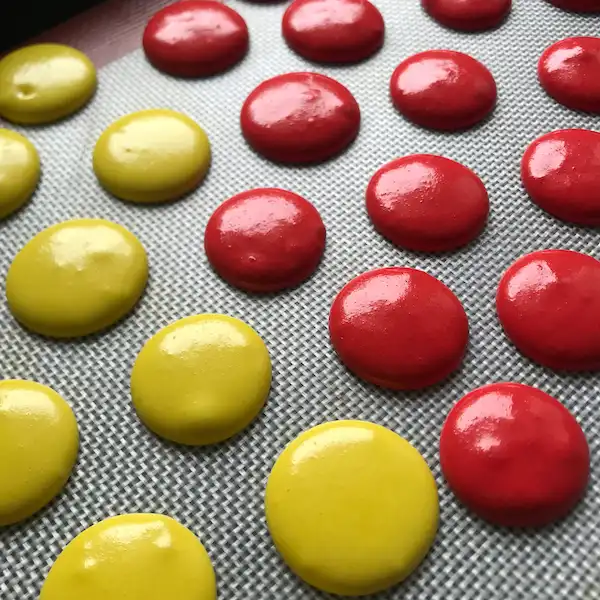
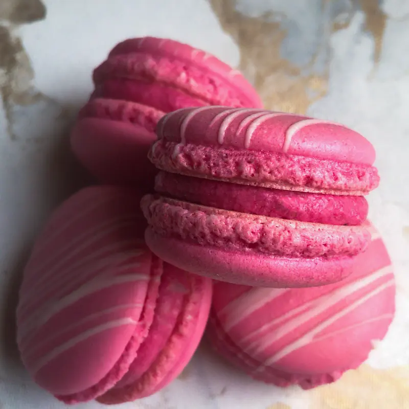

baking something good...
baking something good...
Perfect shells, chewy centres and beautiful feet — with just 4 ingredients and no resting time required.

Macaron Batter after piping out on a tray.
The French macaron is one of the most iconic and widely recognised pastries in the world. Made from just four ingredients — almond flour, powdered sugar, granulated sugar and egg whites — these delicate sandwich cookies have a smooth, lightly crisp exterior, a chewy interior and the characteristic ruffle at the base known as the "foot." They are naturally gluten-free, endlessly customisable through colour and filling, and one of the most visually striking things you can put on a dessert table.
They are also, famously, one of the most temperamental things you can bake. Unlike most cookies where a slight variation in technique produces a slightly different result, macarons punish imprecision. Too little folding and the shells crack. Too much folding and they spread flat with no feet. A humid day, a slightly warm oven, a trace of egg yolk in the whites, a bowl with a smear of butter — any one of these can ruin an entire batch. This reputation has put off many home bakers, and understandably so.
But here's the truth: macarons are a technique problem, not an ingredient problem. Once you understand why each step exists — what the macaronage is actually doing, why the meringue stage matters, what the correct batter consistency feels like — the process becomes far more predictable. This recipe is designed to demystify every step and give you reliable results from the very first batch.
The French Macaron is a work of art if done correctly.
There are two main approaches to making macarons: the French method and the Italian method. The Italian method involves cooking a hot sugar syrup to a precise temperature and streaming it into the egg whites to create a more stable meringue. It produces very consistent results at scale and is preferred in professional kitchens — but it requires a sugar thermometer and several extra steps that make it unnecessarily complex for home baking.
This recipe uses the French method — whipping raw egg whites with granulated sugar directly. It's simpler, requires no thermometer, uses fewer steps and less equipment, and produces beautiful results when the technique is correct. For small batches of 15–20 macarons, the French method is the right choice.
Macaronage is the process of folding the almond flour mixture into the meringue, and it is the single most important and most misunderstood step in macaron making. The goal is to deflate the meringue slightly while fully incorporating the dry ingredients — achieving a batter that flows smoothly without being too liquid.
Under-folded batter produces shells with peaked tops that don't smooth out, and often cracks during baking. Over-folded batter spreads too flat, fails to develop feet, and produces hollow or chewy-in-the-wrong-way shells. The correct batter should flow off the spatula in a thick, slow ribbon and settle back into itself within about 10 seconds — described by many pastry chefs as the consistency of brownie batter or flowing lava. A useful test is the figure-eight test: if you can draw a figure eight with the batter falling off the spatula without it breaking, you're there.
🎯 The macaronage is done when the batter falls off the spatula in a slow, thick ribbon and a figure eight can be drawn without the stream breaking.
Even experienced bakers encounter macaron problems. Here is a quick reference guide to the most common issues and their most likely causes.

Filled and matured — macarons after 24 hours in the fridge develop that characteristic chewy, melt-in-the-mouth texture.
The shell is only half the story — the filling is where personality comes in. The most classic French macaron filling is a flavoured buttercream, which is easy to make, pipes cleanly and holds its shape well. A simple ratio of 2:1 icing sugar to butter, beaten until light and flavoured with vanilla, raspberry, pistachio, coffee or lemon, will serve you well for most applications.
For something richer, a chocolate ganache made from equal parts dark chocolate and warm cream fills beautifully and sets firmly in the fridge. Fruit jams and curds — lemon curd, passion fruit curd, strawberry jam — work especially well in combination with a simple buttercream base to prevent sogginess. For a more indulgent option, Nutella, Biscoff spread or salted caramel piped generously between two shells produces something genuinely hard to put down.
One of the best-kept secrets of macaron making is that they are almost always better on the second day than the first. The process of maturation — storing the filled macarons in an airtight container in the refrigerator for 24 hours — allows the moisture from the filling to slowly permeate the shells, transforming them from slightly crisp to delicately chewy throughout. If you've ever had a macaron from a professional bakery and wondered how the texture is so perfectly uniform from edge to centre, this is the answer.
Filled macarons keep well in the refrigerator for up to 3–4 days. Remove them from the fridge 20–30 minutes before serving and allow them to come to room temperature — the flavour and texture at room temperature is significantly better than straight from the cold. Unfilled shells can be frozen in an airtight container for up to a month, making it easy to bake a large batch and fill them as needed.
⏰ The 24-hour rule: always mature your filled macarons in the fridge overnight before serving. The patience pays off every single time.
Order custom macarons and desserts from Half Baked — delivered fresh across Chandigarh.
The "no-rest" aspect of this recipe is worth addressing directly. Resting refers to letting the piped shells sit at room temperature before baking, allowing the surface to dry out slightly and form a thin skin that prevents cracking during baking. Many traditional macaron recipes require this step, and for good reason — it is a reliable way to get smooth tops on inconsistent batters.
This recipe skips the rest because the ingredient ratios and macaronage method are calibrated to produce a batter that goes into the oven at exactly the right consistency — not too stiff, not too loose. When the folding is done correctly and the oven temperature is accurate, the shells will develop smooth tops and proper feet without any resting time. That said, if you are baking in a particularly humid environment or find your shells cracking despite correct technique, resting for 20–30 minutes before baking is always available as a safety net. It won't hurt the final result, and on certain days it will help.
Making macarons for the first time is rarely perfect — and that's entirely expected. Most bakers need two or three attempts to dial in their specific oven, their specific egg whites and their specific folding technique. Don't be discouraged by a batch that doesn't look quite right. The troubleshooting guide above covers almost every common failure point, and the recipe is forgiving enough that even imperfect macarons tend to taste delicious. Bake, learn, adjust, and try again. That's how all the best bakers got there.
Tag us on Instagram when you make this recipe — we love seeing your bakes.